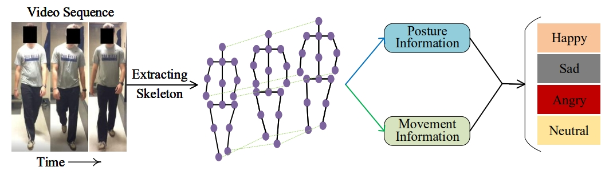

Emotions can be perceived from a person’s gait, i.e., their walking style. Existing methods on gait emotion recognition mainly leverage the posture information as input, but ignore the body movement, which contains complementary information for recognizing emotions evoked in the gait. In this paper, we propose a Bilateral Posture and Movement Graph Convolutional Network (BPM-GCN) that consists of two parallel streams, namely posture stream and movement stream, to recognize emotions from two views. The posture stream aims to explicitly analyse the emotional state of the person. Specifically, we design a novel regression constraint based on the hand-engineered features to distill the prior affective knowledge into the network and boost the representation learning. The movement stream is designed to describe the intensity of the emotion, which is an implicitly cue for recognizing emotions. To achieve this goal, we employ a higher-order velocity-acceleration pair to construct graphs, in which the informative movement features are utilized. Besides, we design a PM-Interacted feature fusion mechanism to adaptively integrate the features from the two streams. Therefore, the two streams collaboratively contribute to the performance from two complementary views. Extensive experiments on the largest benchmark dataset Emotion-Gait show that BPM-GCN performs favorably against the state-of-the-art approaches (with at least 4.59% performance improvement).

A skeleton-based gait is represented by a sequence of 3D
joint coordinates. It can be denoted as C × T × N, where
C is the attribute dimension of a joint (e.g., if we represent
each joint with 3D coordinates, it is 3). T is the length of
the temporal sequence, and N denotes the number of joints in
a single frame.
As shown in the Figure, the proposed Bilateral Posture and
Movement Graph Convolutional Network (BPM-GCN) consists
of two streams. One is the posture stream that aims
to extract emotional information from the person’s posture
(i.e., joint position, the angles between joints, the distance
between joints, and body area), and the other is the movement
stream that leverages the velocity and acceleration to model
the person’s emotions.
The posture stream takes the joint coordinates based graph as input and outputs the emotion prediction. We divide the posture stream into two branches, i.e., classification branch and regression branch, where they share weights except for the last fully-connected layers. The first branch outputs the classification prediction for the emotions and the second branch distills the knowledge from the posture-based hand-crafted affective features via a regression constraint. Such an affective constraint can bridge the gap between the posture and emotion, and thus benefits the stream to learn more discriminative representations.
The movement stream predicts the human emotions from the movement attributes of human joints. It is based on the fact that the movement attributes have closely relation with the intensity of emotion, which is a implicit cue for predicting human emotions. Note the movement stream contains only one classification branch and has no regression branch with it. This is because the posture based affective features have been well-defined in the literature and can be easily computed based on joint positions, while it is a challenging task to build a similar constraint with velocity and acceleration as input. We are considering investigating such a constraint in the future.
@article{zhai2024Looking,
author={Zhai, Yingjie and Jia, Guoli and Lai, Yu-Kun and Zhang, Jing and Yang, Jufeng and Tao, Dacheng}
journal={IEEE Transactions on Affective Computing},
title={Looking into Gait for Perceiving Emotions via Bilateral Posture and Movement Graph Convolutional Networks},
year={2024}
}